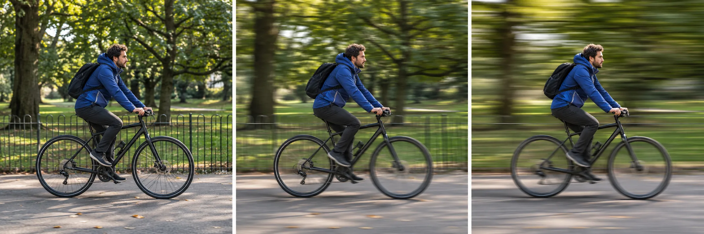

Shutter speed is the control that decides how long the camera records the scene. That makes it the clearest place to start when movement is the problem—or when movement is the effect you want. A faster shutter speed is more likely to freeze a moving subject. A slower speed gives movement more time to register as blur.
The first decision is not “Which number is correct?” It is “Do I want the movement to look stopped, partly visible, or deliberately blurred?” Once that choice is clear, check what the change does to brightness and camera stability. Nikon describes shutter speed as both an exposure control and a creative control for recording time; its beginner guide is a useful reference for the basic relationship.
Start with the motion you want
Use this short decision table before changing a setting:
| Visual goal | Starting direction | Next check |
|---|---|---|
| A walking person should look crisp | Faster shutter speed | Is the frame now too dark? |
| A passing object should show some movement | Middle or slower direction | Is the blur readable rather than accidental? |
| Water or lights should stretch into a blur | Slower shutter speed | Is the camera stable enough? |
| The whole frame is soft | Faster speed or better support | Is the softness from camera movement? |
These are directions, not universal settings. A walking person, a cyclist, and a bird do not move at the same speed or distance. The same subject can also need a different speed when it moves across the frame rather than toward the camera.
What the shutter changes
The shutter is open for a measured time, usually expressed in seconds or fractions of a second. A fast value such as 1/1000 second lets in less light and can stop much action. A slower value such as 1/30 second lets in more light but gives movement more time to appear as blur. Nikon School uses this contrast to explain why a walking person may show blur at a slow speed while very fast action needs a much shorter exposure.
The exposure trade-off is immediate. If you choose a faster speed in the same light, the frame may become darker unless the camera opens the aperture, raises ISO, or applies another automatic adjustment. If you choose a slower speed, brightness may improve while movement becomes less frozen. Treat the setting as a priority decision, not as an isolated number.
Subject movement and camera movement are different
Subject movement happens when the person, animal, vehicle, or object changes position during the exposure. Camera movement happens when the camera changes position while the shutter is open. Both can make an image look blurry, but they need different first responses.
If a building edge and a person are both streaked, camera movement may be involved. Stabilize the camera or increase shutter speed. If the building is clear but the moving person has a soft or doubled outline, the camera may have been stable and the subject moved. A tripod can help the first problem; it cannot make a moving subject stop.
This distinction also prevents a common mistake: changing autofocus when the real issue is motion. Focus can be correct while the subject still moves during the exposure.
A walking-subject example
Imagine a person walking from left to right across a room. First decide whether the goal is a crisp step or a visible sense of movement. For a crisp step, start in the faster direction and inspect the hands and feet. If they remain soft, increase the speed again or ask the subject to pause. If the frame darkens, decide whether the camera can open the aperture or raise ISO without creating a more serious problem.
For a sense of movement, use a slower direction and keep the camera as stable as possible. Inspect the background: if it remains readable while the person blurs, the motion is mainly in the subject. If both background and subject streak, camera movement is also part of the result.
Do not copy a walking-person number into a different scene. Distance, direction, light, and the subject’s pace change the answer.
When blur is the point
A slow shutter is not automatically a mistake. A hypothetical photograph of water can use a longer exposure to turn separate ripples into a continuous soft shape. A passing vehicle can become a streak while the camera stays fixed. A night road can record lights as lines when the exposure lasts long enough.
The check is intention. If the blur explains the subject’s movement, it is doing useful work. If the blur hides the subject when you wanted detail, return to a faster direction or shorten the time the subject must remain still.
The motion-intent card
Before the next frame, write four lines:
- Subject: what is moving?
- Visual goal: freeze, partly show, or deliberately blur the movement.
- First control: faster, middle, or slower shutter direction.
- Check: which edge, hand, foot, light, or background detail will confirm the choice?
For example: “A person walking; freeze the step; choose a faster shutter direction; check the hands and feet while keeping the wall readable.” If the check fails, change one variable and record the new trade-off.
Shutter speed becomes easier when it is tied to a visible intention. Choose how time should look, distinguish subject blur from camera movement, and then let brightness and ISO become the next decision rather than the first source of confusion.
One more check helps: movement across the frame usually needs more control than a subject moving directly toward you at the same apparent pace. Distance and direction change how quickly the subject crosses the image. Treat the first frame as a question, then let the visible edge tell you whether the next move should be faster or slower.
Research sources
Sources
- Understanding Shutter Speed: Capturing Time in Photography — Nikon USA
- Capturing or Freezing Motion in Photos — Nikon USA
- Nikon School: Shooting Action — Nikon USA
- Photography for beginners: master the basics — Adobe